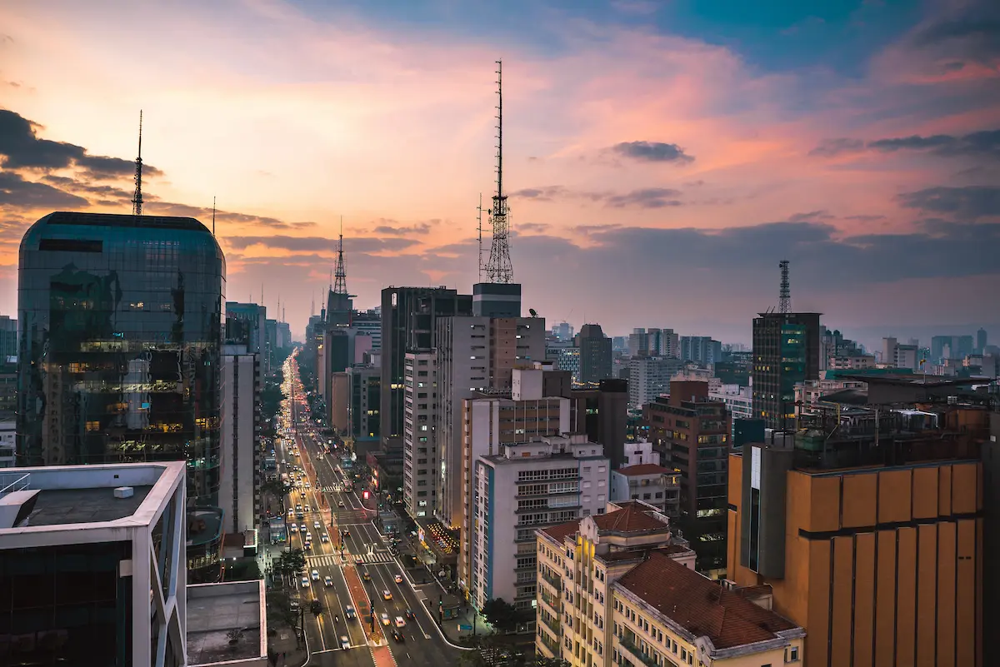

Galeria



Viva a experiência de estar entre o campo e a cidade, comemorando a diversidade de estilos de vida.
O projeto "Festejando a Conexão Campo-Cidade" visa celebrar a harmonia entre a vida no campo e na cidade. Combinamos as tradições rurais com a modernidade urbana, criando experiências únicas que conectam essas duas realidades.